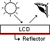
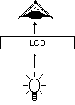
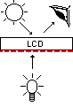

La pantalla LCD es otro dispositivo de despliegue de información muy versatil y viene en una gran cantidad de modelos y configuraciones. Sirven como ventana a datos, configuraciones o despliegue de información donde un LED no es suficiente.
Los Display LCD son visualizadores pasivos, esto significa que no emiten luz como el visualizador o display alfanumérico hecho a base de un arreglo de diodos LED.
Es por esa razón que, algunas veces, cuando intentamos ver la hora en un reloj que utiliza esta tecnología, es necesario una fuente de luz adicional. El Display LCD tiene muy bajo consumo de energía si se lo compara con el display o visualizador alfanumérico y son compatibles con la tecnología CMOS, característica que permite que se utilice en equipos portátiles (ejemplo: los relojes de pulsera, calculadoras, etc.). Tiene una vida aproximada de 50,000 horas. Hay diferentes tipos de presentaciones y son muy fáciles de configurar. Hay desde visualizadores comunes de 7 segmentos, hasta una matriz de puntos, todos ellos muy delgados.
¿Cómo funciona un Display LCD?
El LCD modifica la luz que lo incide. Dependiendo de la polarización que se esté aplicando, el LCD reflejará o absorberá más o menos luz. Cuando un segmento recibe la tensión de polarización adecuada no reflejará la luz y aparecerá en la pantalla del dispositivo como un segmento oscuro. Seguro que más de un lector habrá visto este fenómeno en calculadoras, relojes, etc.
El líquido de un display LCD está entre dos placas de vidrio paralelas con una separación de unos micrones. Estas placas de vidrio tienen unos electrodos especiales que definen, con su forma, los símbolos, caracteres, etc. que se visualizarán. La superficie del vidrio que hace contacto con el líquido es tratada de manera que induzca la alineación de los cristales en dirección paralela a las placas. Esta alineación permite el paso de la luz incidente sin ninguna alteración. Cuando se aplica la polarización adecuada entre los electrodos, aparece un campo eléctrico entre estos electrodos (campo que es perpendicular a las placas) y esto causa que las moléculas del líquido se agrupen en sentido paralelo a este (el campo eléctrico) y cause que aparezca una zona oscura sobre un fondo claro (contraste positivo). De esta manera aparece la información que se desea mostrar.
Visualización del Display
LCD en modo reflector
En este modo el sistema LCD utiliza un reflector de difusión (una lámina reflectora), que refleja la luz ambiente a través del visualizador.

Excelente para áreas donde siempre hay luz disponible y como no requiere de una fuente de energía se puede utilizar con baterías. Este modo ofrece un alto contraste.
Visualización del Display LCD en modo transmisor
En este modo el visualizador LCD es iluminado desde atrás en forma artificial. Se utiliza mucho para visualizaciones negativas (segmentos claros sobre fondo oscuro).

Visualización del Display LCD en modo transflector
Este modo es un híbrido de los dos modos antes mencionados y se utiliza para desplegar la información bajo cualquier condición de iluminación. En este modo el display LCD refleja tanto la luz ambiente como la luz artificial de fondo difusa para uso nocturno.

Se puede introducir color en los visualizadores LCD de las siguientes maneras:
- Polarizadores selectivos de color. Estos producen segmentos de color sobre un fondo brillante o segmentos brillantes sobre un fondo de color.
- Filtros de color. Pueden ser una lámina o estar impresos en el visualizador. Estos filtros trabajan mejor con iluminación trasera.
- Luz trasera de color Cuando los segmentos no han sido energizados, aparecen oscuros, pero cuando se energizan permiten el paso de la luz de color.
Lo primero que debemos saber, es la conexión de la pantalla LCD según el tipo que vamos a usar y para esto consultaremos el “LCDpc1602h” (Hoja información) de una pantalla LCD genérica 2x16 es decir 2 filas de 16 caracteres cada una.
Las pantallas LCD son dispositivos que se puede dañar muy fácilmente, actualmente se encuentran varios modelos: 1X30, 4X16, 2X16 y de led, en vez de cristal líquido y todas trabajan de forma similar.

Al dorso de la pantalla veremos que los pines están numerados.

Dorso Pantalla LCD
En este modelo en particular de pantalla LCD, solo se marca el PIN 1 y el 16.
Identificar los pines no es gran problema, ahora debemos saber cómo conectarlos, para eso vamos a ver el siguiente diagrama.
Diagrama de la pantalla LCD |

Podemos dividir el diagrama en dos partes como se ve en la figura, la parte de "control y despliegue" (izquierda) y la parte de "alimentación y ajuste" (derecha).

El diagrama Power Supply (alimentación y ajuste) VSS sería el neutro (polaridad -) y VDD de +3.3V a +5V (según el modelo de la LCD), entre ellos una resistencia ajustable (potenciómetro) a V0 que nos servirá para ajustar el contraste de la pantalla.
El LED BKL (LED BACKLIGHT) lo podemos tomar como un circuito independiente, su función es de retroiluminar la pantalla, es decir, es para poder ver los dígitos en la oscuridad, A y K no por casualidad se comportan en cierto modo como un led normal, pero este tiene mayor consumo, se alimenta directamente a +4.5V o a +5V.
No es obligatorio conectar el (LED BACKLIGHT) para que funcione la LCD, como comentamos antes es un circuito independiente, lo interesante es que podemos usar un interruptor normal o uno mediante un circuito de conmutación (transistores o MOSFET) controlado por el mismo PIC para que solo cuando halla actividad (por ejemplo) este encendido (ya que este tiene un consumo considerable).
Para lo demás pines tenemos a continuación la descripción que nos da una hoja de datos de un fabricante ya que no hay mucho problema en lo que de conexión se trata.
|
Descripción de los pines y su función |